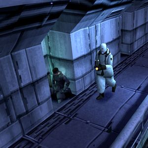

The plot of Metal Gear Solid 1
Metal Gear Solid follows Solid Snake, a retired operative pulled back into action by his old commander, Colonel Roy Campbell. The elite unit FOXHOUND, led by Liquid Snake, has seized a remote Alaskan nuclear weapons disposal facility on Shadow Moses Island. They threaten to launch a nuclear strike unless the government hands over the remains of Big Boss and a ransom. Snake infiltrates the base, uncovers a secret nuclear-armed walking tank called Metal Gear REX, and battles FOXHOUND's members. He learns that he and Liquid are genetic twins, cloned from Big Boss. Snake ultimately stops the launch and escapes alive.

The main character of Metal Gear Solid 1
Solid Snake is the main character of Metal Gear Solid 1. He is a retired operative who is pulled back into action by his old commander, Colonel Roy Campbell. Snake is a skilled infiltrator and combatant, known for his ability to avoid detection and his tactical approach to missions. He is the protagonist of the game and the central figure in its narrative.
Where does Metal gear solid take place?
Metal Gear Solid takes place on Shadow Moses Island, a remote location in Alaska. The island is home to a nuclear weapons disposal facility that has been seized by the rogue FOXHOUND unit. The setting is crucial to the game's plot, as it provides a confined and tense environment for Solid Snake's infiltration and the unfolding of the story.